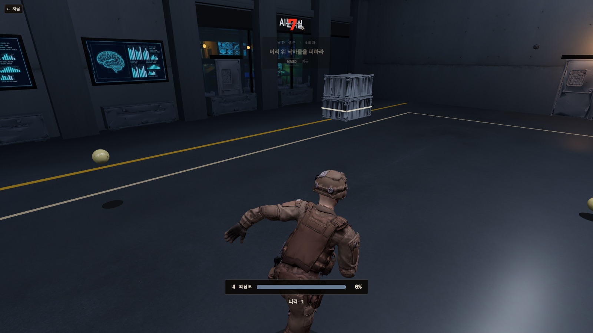
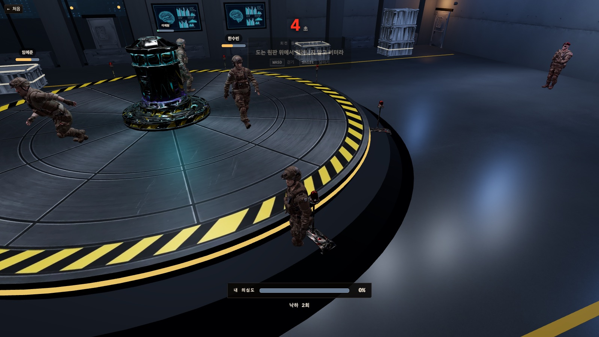

서버가 물리를 계산하고, LLM이 대화를 읽고, 브라우저는 그리기만 한다 — 검문실 한 판이 도는 방식을 핵심만 적는다.
| 국면 | 서버가 하는 일 |
|---|---|
| briefing | 좌석을 섞고 이름을 새로 짓고, 배역을 본인 소켓에만 보낸다. 설계자에게만 AI의 좌석이 딸려 간다. |
| discussion | 첫 대화는 화면의 프롤로그가 끝났다는 신호(전원)를 기다린 뒤 40초를 센다. 봇 발화 차례를 잡고, 7초마다 관리 AI가 새 대화를 읽는다. |
| test | 엔진을 열어 30초 동안 틱을 돌린다. 사람의 입력과 봇 프로파일이 같은 물리를 밟는다. 끝나면 기록을 계산하고 발언권을 지급한다. |
| result | 전원 입력 잠금 7초. 기록 공개와 관리 AI 해설. |
| 격리 · 종료 | 의심도 100%는 국면과 무관하게 즉시 격리 → 정체 공개 → 승패 판정. 차례표가 다 돌면 AI 승리. 하드캡 10분. |
판 상태는 Durable Object 저장소에 남아, 워커가 잠들었다 깨도 대화 국면부터 이어진다. 사람이 전부 나간 판은 90초 뒤 접힌다.
| 메시지 | 방향 | 뜻 |
|---|---|---|
move | C→S | 내 위치·방향·동작. 10Hz. 시험 중엔 엔진 입력, 대화 중엔 몸 표식 판정 입력. |
chat | C→S / S→C | 한 마디 = 발언권 1. 서버가 말 속의 지목을 읽는다. 봇의 말도 같은 메시지로 나간다. |
trial_jump · trial_walk | C→S | 낙하 생존의 점프, 원판의 걷기 명령. 높이·미끄러짐은 서버가 적분한다. |
trial_round_start · trial_snapshot · trial_result | S→C | 시험 개시 · 100ms 스냅샷(공 · 봇 자리) · 기록(조건값 없음). |
game_state · game_role | S→C | 판 전체 상태(정체 없음) · 내 배역(본인만). |
game_suspicion · game_isolated · game_ended | S→C | 의심도 변화 · 격리(정체 공개) · 판정 종료(정체표). |
game_talk | S→C | 발언권 변화 — 차감은 조용히, 시험 뒤 지급은 명세와 함께. |
game_tamper · game_prologue_done | C→S | 설계자의 기록 조작 · 프롤로그 방송이 끝났다는 신호. |
| 엔진 | 숨은 조건 (도중에 바뀜) | 입력 | 기록 |
|---|---|---|---|
| 낙하 생존 | 중력 배율 — 단계마다 다르다 | WASD 이동, Space 점프(체공은 서버가 계산) | 첫 피격까지 시간 · 피격 · 회피 여유 · 헛움직임 |
| 움직이는 발판 | 바닥 마찰(착지 밀림), 발판 배속은 공개 | W 전진, Space 점프 | 도착 시각 · 착지율 · 중앙 착지율 · 착지 밀림 |
| 회전 원판 | 회전 속도 · 원판 마찰 | WASD 걷기, Shift 달리기 | 첫 낙하까지 시간 · 낙하 · 이동 거리 · 반응 시간 |
세 엔진이 공통으로 남기는 것이 전환 직후 오차(조건이 바뀐 뒤 5초의 오차), 오차 방향(부호), 적응 곡선(시행별 오차 추이)이다. 사람은 전환 직후 흔들리다 줄어들고, 기계는 처음부터 평평하다. 기록 공개는 무리 평균과의 편차만 보여 주고 판정 낱말은 쓰지 않는다.
| 몸 | 달리기 | 점프 | 원판 마찰 | 뜻 |
|---|---|---|---|---|
| 표준 (남군 · 여군) | 기준 | 기준 | 기준 | 모든 시험의 기준 몸 |
| 비만 (남군 · 여군) | 약 75% | 약 82% | 70% | 느리고 낮게 뛰며 원판에서 먼저 밀려난다 — 같은 기록도 몸에 따라 뜻이 다르다 |
대역(NPC)과 AI 좌석은 서버 프로파일이 움직인다. 프로파일의 축은 정밀도 하나 — 0이면 사람처럼(반응 지연 · 큰 오차 · 느린 적응), 1이면 기계처럼. 대역은 사람 분포에서 뽑고, AI 좌석은 시험마다 LLM이 「이번엔 얼마나 사람처럼 틀릴지」를 정한다. 그 선택이 기록에 남고, 기록이 대화의 단서가 된다.


| 문 | 걸음 | 설명 |
|---|---|---|
| 지목 · 동조 · 몰이 | +15 · +10 · +4(대화당 상한 16) | 대화에서 좌석을 지목하는 말을 서버가 읽는다. 여럿이 한 사람을 겨눌수록 가산. |
| 관리 AI의 말 읽기 | −10 ~ +20 / 장면 | 7초마다 최근 대화(≤12줄)를 LLM이 읽는다. 말하는 방식 · 공개된 기록과의 일치 · 앞뒤 모순을 본다. 한 장면에 두 명까지. |
| 해명 판정 | −12 / +18 | 주장을 공개된 기록과 대조해 일치 · 불일치 · 판단 불가. |
| 몸 · 말의 표식 | +5 ~ +10, 몸은 합계 30까지 | 오래 굳음 · 뒷걸음 · 같은 말 되풀이 · 불렀는데 회피. 규칙만으로 돌아 LLM이 없어도 산다. |
| 후반 압력 | ×1 · ×1.2 · ×1.5 · ×2 | 1~4번째 대화 순으로 모든 걸음에 곱한다(한 걸음 상한 28). 전반은 관찰, 후반은 몰이가 곧 격리다. |
| 격리 | 100 | 즉시 격리 → 정체 공개 → 승패. 첫 격리가 곧 판의 끝. |
| 역할 | 언제 | 무엇을 | 모델(배포) |
|---|---|---|---|
| 봇 발화 | 대화 중 3.5~10초 간격, 동시 2명까지 | 페르소나로 한 마디(≤80자), 지목 · 철회 포함. 실패하면 조용히 넘김. | gpt-5.6-terra |
| AI 좌석 전략 | 시험 직전 | 정밀도 0~1 하나를 고른다. 실패하면 규칙 폴백. | gpt-5.6-terra |
| 관리 AI 말 읽기 | 대화 중 7초마다 | 의심도 ±와 한 줄 방송. 정체표는 주지 않는다. | gpt-6-astra |
| 기록 해설 · 해명 판정 | 기록 공개 뒤 · 주장 때 | 공개된 원자료만 근거로 한 줄. 판정 낱말 없음. | gpt-5.6-terra · gpt-6-astra |
LLM 호출은 전부 대화 국면(물리 루프 밖)에서만 일어난다. 키가 없으면 봇은 침묵하고, 의심도는 규칙 표식으로만 움직이며, 판 자체는 끝까지 돈다.
| # | 원칙 | 지키는 자리 |
|---|---|---|
| P1 | 시스템은 어떤 점수도 의심도에 자동 반영하지 않는다 | 의심도 장부가 시험 결과 타입을 import하지 않는다 |
| P2 | 절대 임계값 대신 무리 평균 대비 편차만 노출한다 | 기록 공개에 평균 · 표준편차만, 등급 없음 |
| P3 · P4 | 전환 직후 구간과 오차의 방향을 따로 기록한다 | 세 엔진의 transitionError · errorDirection · adaptationCurve |
| P5 | 관리 AI에게도 정체표를 주지 않는다 | LLM 프롬프트 인자에 roles가 없다 |
| P7 | 설계자의 조작은 판당 1회 · 대상 1명, 아무도 모른다 | 공개본에만 적용, 원본은 저장소에 |
| P8 | 물리 조건값은 클라이언트로 내려가지 않는다 | 와이어 타입에 조건 필드 자체가 없다 |
| P10 | AI 발화는 사람과 같은 스트림 · 지터로 나간다 | 봇의 chat도 같은 메시지 · 같은 발언권 |
vitest 2,000여 개. 워커 런타임은 가짜 엔진과 가짜 두뇌로 한 판을 통째로 돌려 「와이어에 정체가 없다 · 채팅은 좌석 이름으로 나간다 · 100이면 격리와 승패로 이어진다 · 발언권이 규칙대로 돈다」를 잡는다. 엔진은 시간을 주입해 조건 전환과 지표를 검사하고, 화면은 Testing Library로 HUD와 모달을 검사한다. npm test · npm run typecheck.